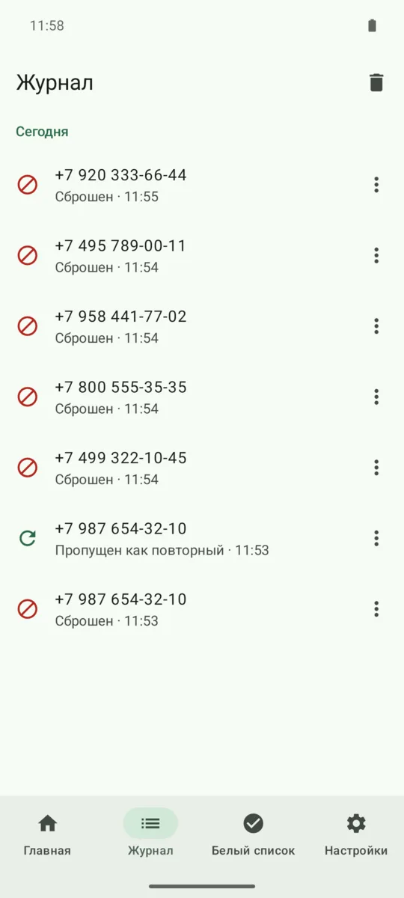
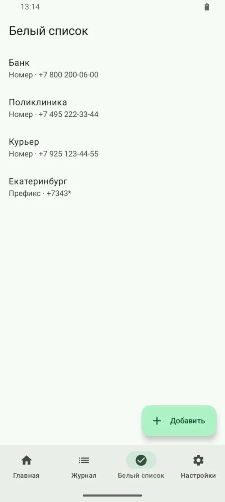
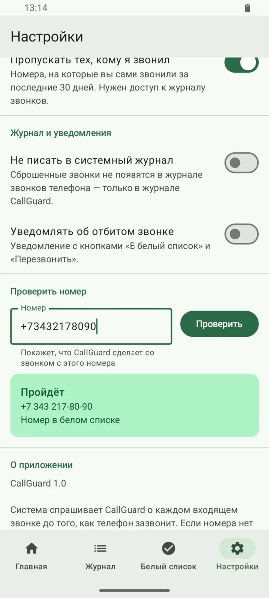
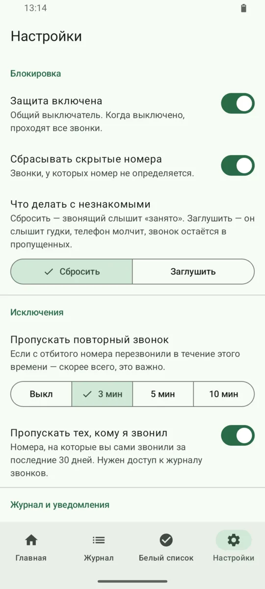

Откройте доступ к контактам
Чтобы отличать знакомые номера. Контакты только читаются на телефоне и никуда не отправляются.
Надоели «служба безопасности банка», опросы и роботы? CallGuard сбрасывает звонки с номеров, которых нет в контактах, ещё до того, как телефон зазвонит. Знакомые, курьер и поликлиника дозваниваются как обычно.
Чтобы отличать знакомые номера. Контакты только читаются на телефоне и никуда не отправляются.
Одно системное окно. Android будет спрашивать CallGuard о каждом входящем. Звонилку по умолчанию менять не нужно.
Звонок с номера не из контактов и не из белого списка сбрасывается до первого гудка и попадает в журнал.
Снято на эмуляторе, номера выдуманы.




Номер есть в контактах или в белом списке, вы сами на него звонили, или с отбитого номера перезвонили через пару минут — телефон звонит. Остальные звонки сбрасываются.
Перезвонили с отбитого номера в течение 3, 5 или 10 минут — скорее всего, это важно. Такой звонок пройдёт.
Номера, которых нет в контактах, но звонки с которых нужны. Префикс со звёздочкой — +7343* — пропустит все номера с таким началом.
На 30 минут, час или два — с главного экрана или плиткой в шторке. Защита включится сама.
Номера, на которые вы сами звонили за 30 дней, проходят без белого списка. Включается в настройках.
Все отбитые звонки за 30 дней. Из записи — в белый список или перезвонить. По желанию — уведомление с теми же кнопками.
Звонящий слышит «занято» — или гудки, пока телефон молчит, а звонок остаётся в пропущенных.
Покажет, что CallGuard сделает со звонком с любого номера и почему — до того, как он позвонит.
У CallGuard нет разрешения на интернет. Это видно в карточке приложения в магазине: Android просто не даст ему выйти в сеть.
Телефон
Остаётся здесь
Интернет
Разрешения нет в манифесте приложения. Ни серверов разработчика, ни сторонних сервисов.
Для этого есть повторный звонок (перезвонили в течение нескольких минут — пройдёт), пауза «Жду звонка», белый список и «Пропускать тех, кому я звонил». Каждый отбитый звонок виден в журнале, а по желанию приходит уведомление с кнопкой «Перезвонить».
Нет. CallGuard использует системную роль «Определитель номера и защита от спама»: звоните и принимайте звонки как раньше.
В режиме «Сбросить» — «занято». В режиме «Заглушить» — обычные гудки: телефон молчит, а звонок остаётся в пропущенных.
Нет, и это намеренно. CallGuard не гадает, кто спамер, а пропускает только своих. Поэтому ему не нужны ни интернет, ни обновления баз — и новый номер мошенника тоже не дозвонится.
До первой разблокировки телефона контакты и настройки зашифрованы, и в это время звонки проходят. После разблокировки защита работает как обычно.
CallGuard — только для Android 10 и новее.
Оставьте почту Google-аккаунта — пришлю приглашение в закрытый тест.